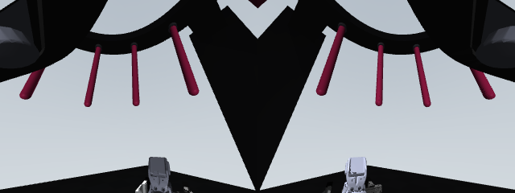

We built a MuJoCo version of the Reaction Ring arcade game for a wheeled humanoid and gave it to GPT-6.2-Astra under three protocols. With the world paused while it thinks, Astra catches 54.5% of falling sticks. With the world running, it catches 0.0%: a decision takes 7.4 s and a stick hits the floor in 0.56 s.
The Reaction Ring drops sticks one at a time from an overhead bar; the player must catch each one in the half second before it lands. It isolates one question: can the agent close the loop from seeing to acting fast enough? Astra perceives and plans the task well, perfectly with privileged state and at 55% from cameras alone when time stops, but its decision latency is nearly two orders of magnitude above the task's budget, so in real time it catches nothing. A leaner sensor payload with prompt caching brought decisions to 6.5 s and caught 0 of 800. Only slowing the world down helps: 80× slower, Astra catches 39%, while at 20× it catches 2%.
Most embodied benchmarks let the environment wait for the model. That hides the cost of thinking: a policy that is correct but slow scores the same as one that is correct and fast. Our exam follows the three settings of the exam framework we evaluate under: Privileged (the agent reads the simulator and submits a trajectory that is replayed), Standard (sensors only, simulation paused between calls, live episode graded) and Realtime (as Standard, but the simulation keeps running during inference). Because Realtime is costly it is reserved for dynamic tasks. A dynamic task should make the gap between Standard and Realtime large and interpretable.
The Reaction Ring is about as dynamic as a manipulation task gets while staying simple to grade. Perception is easy (a pink stick moves), the motion is short (a hand moves a few tens of centimetres), and the only hard part is doing it within a few hundred milliseconds. The difference between the Standard and Realtime scores is therefore almost entirely the cost of latency.
The machine follows the manufacturer's manual[1]: a 2.05 m stand whose curved overhead bar holds 8 sticks (menu default; 10 or 12 optional) on electromagnets. At difficulty 1 sticks fall in random order 0.5–1.5 s apart, after a 3-2-1 countdown, with hints off.
Half-circle bar of radius 0.5 m around the robot; foam sticks 40 cm × 3.2 cm, 120 g, hanging from 1.95 m to 1.55 m.
Wheeled base, humanoid torso, two 7-DoF arms, Dex1-1 parallel grippers (80 mm, 20 N). Link inertias and limits from Unitree's URDF.
Two 106° head cameras (2 × 320×240), metric depth, joint encoders, wheel odometry, measured pinch points.
Base velocity, waist yaw, and a pinch-point target plus jaw opening per hand. An IK controller with joint rate limits executes them.
Left half looks forward-left, right half forward-right. The black post is the machine's column.

Judging happens in the simulator and is never shown to sensor-mode agents. A stick counts as caught when both jaw pads of one gripper touch it continuously for 0.2 s before it touches the floor. It is a miss if it reaches the floor or is not caught within 1.5 s. Touching a stick before its magnet releases is a foul. Caught and missed sticks are cleared from the play area, as an attendant would.
One rule was added after calibration, and it matters for what the test measures. A hand parked under a stick with its jaws half closed catches it with no timing at all, because the stick wedges between the fingertips (Section 04). We therefore require the stick to fall into open jaws: if its bottom end enters a gripper whose gap is under 36 mm (the stick is 32 mm), the hold is "trapped" and does not score. Agents are told the rule in plain words. The thresholds stay hidden.
Astra reads the whole state: stick poses, the exact release schedule, and the judging rule. In up to 8 turns it may simulate a keyframe plan from the start (a reset) and see the outcome, then submit. The submission is replayed in a fresh simulator, and only the replay is graded.
The simulator is a separate service. Each turn Astra receives the head RGB and depth, the previous image, its own notes, and proprioception. It returns a command plus advance_ms (40–2000 ms). The simulation pauses while it thinks. No resets. The live game is graded.
Same observations and commands, but the simulator runs on the wall clock at 25 Hz. One decision is in flight at a time. The previous command holds until a reply arrives, then a fresh frame goes out immediately. Inference time is game time.
Harness. Astra is called through the locally authenticated Codex app-server with tools, shell, web search and plugins disabled, structured JSON output, and reasoning effort low (the lowest the model accepts; minimal and none are rejected). Sensor-mode turns are stateless: each decision opens a fresh ephemeral thread containing the instructions, the current sensors, the previous frame and up to 400 characters of notes Astra wrote to itself last turn. This keeps cost and latency constant over long episodes. All protocols use the same 100 seeds, which fix the drop order and timing. Every recorded game was re-simulated from its applied commands and reproduced exactly.
Scripted controllers on the same 100 seeds establish that the task is solvable, solvable from cameras alone, and where the latency budget lies.
| Controller | Caught | Rate |
|---|---|---|
| Schedule oracleKnows the release schedule; parks the free hand under the next stick and closes 0.16 s after release. | 790/800 | 98.8% |
| Camera-only reflexFinds sticks in the first head image, flags a drop when pink pixels leave the magnet or appear below the tip (40–80 ms), then intercepts. | 458/800 | 57.2% |
| Parked guess, timed closeBoth hands wait under two fixed sticks all game and close at the right moment: the most pure guessing can earn. | 200/800 | 25.0% |
| Parked guess, half-closed jawsSame, but jaws held narrower than the stick with no timing at all. Would catch every stick that falls into it without the open-jaws rule. | 0/800 | 0.0% |
| IdleNever moves. | 0/800 | 0.0% |
A reflex controller is told which stick fell after a fixed delay. Astra's points use the median game time per Realtime decision.
| Delay | Catch rate |
|---|---|
| 0 ms | 77.1% |
| 40 ms | 86.4% |
| 80 ms | 77.9% |
| 120 ms | 23.4% |
| 160 ms | 18.1% |
| 240 ms | 0.1% |
| 500 ms | 0.0% |
| 1000 ms | 0.0% |
| 4000 ms | 0.0% |
The reflex catches 86.4% at 40 ms and 77.9% at 80 ms of delay, falls to 23.4% at 120 ms and 0.1% at 240 ms. Half its catches are gone by about 100 ms. The robot's own motion (about 0.2 s to reach a stick, 0.1 s to close) uses most of the 0.56 s fall. At 0 ms the scripted controller picks a high intercept and sometimes meets the stick side-on, which is why it scores slightly below its 40 ms result.
| Protocol | Caught | Rate | 95% CI | Perfect games | Median decision |
|---|---|---|---|---|---|
| PrivilegedPlanning turns; 2.1 turns per game on average, all 100 games submitted | 800/800 | 100.0% | 100.0%–100.0% | 100/100 | 22.8 s |
| Standard79 decisions per game; world paused during each | 436/800 | 54.5% | 51.0%–57.9% | 1/100 | 6.5 s |
| Realtime0.6 commands applied per 13.7 s game | 0/800 | 0.0% | 0.0%–0.0% | 0/100 | 7.4 s |
Privileged. With the schedule in hand, the task reduces to placing a hand under the right stick and timing the close. Astra wrote keyframe plans, simulated once or twice, fixed whatever failed (typically a close that came too early or a hand that disturbed another), and submitted. 800/800 catches in the graded replays. Privileged mode is an upper bound here, and an easy one: it removes perception and time pressure together.
Standard. Sensors only, but time stands still. Astra played the way a careful human would: it recorded pixel coordinates for every stick tip in its notes at the start, then polled in short steps (53% of its advance_ms choices were ≤ 80 ms), spotted a released stick within one or two frames, moved the nearest open hand under it, and closed. It got a jaw pad onto 782 of 800 falling sticks (97.8%) and held 436. So detection and reaching work; the grasp is where it fails. First contact came 264 ms after release for catches and 260 ms for misses (medians), so missed sticks were not reached later. They were lost after contact: the jaws closed too early or too late for the stick to be held, or the stick slid out. 17 holds were "trapped", with the jaws already partly closed as the stick entered. It averaged 79 decisions per 13.7 s game, a median 6.5 s each, so one game takes about 10 minutes of wall time.
Realtime. The countdown gives 3 s before the first possible release, and a decision takes 7.4 s at the median (4.7 s at best). In 100 of 100 games Astra's first command arrived after the first stick had already landed. It completed only 0.6 commands per game. Across 800 drops, 0 received a command based on an image taken after that stick's release before the stick was resolved. Nothing it did could react to a drop. The score of 0 is not noise: even the best pure guess (Table 1, timed close) would need a close timed to within about 0.1 s of a release it cannot see coming.
We attacked the latency in three ways: shrink what each decision has to read, cache what does not change, and, as a measurement device rather than a fix, slow the world down until Astra starts to catch.
Median with p10–p90 range, from request to parsed JSON, reasoning effort low
The fastest configuration, a text-only question with a one-integer answer, still has a median of 3.3 s. The full sensor turn takes 6.0 s unloaded, against 7.4 s inside the Realtime exam (which overlapped other runs). Payload size moves latency by seconds at most; the per-turn floor of the serving path dominates. The fast profile (one 320×120 image, compact text, one cached thread) brought the median decision to 6.5 s and caught 0/800.
The simulator advances one 40 ms tick every 40 ms × k of wall time. k = 1 is Realtime; "paused" is Standard. Whiskers: 95% bootstrap CI.
| Slow-down | Games | Caught | Rate | Wall latency | Game-time latency | Decisions/game |
|---|---|---|---|---|---|---|
| 2× | 30 | 0/240 | 0.0% | 6.39 s | 3260 ms | 3 |
| 5× | 30 | 1/240 | 0.4% | 6.30 s | 1280 ms | 7 |
| 10× | 30 | 1/240 | 0.4% | 6.05 s | 640 ms | 16 |
| 20× | 30 | 4/240 | 1.7% | 5.92 s | 320 ms | 32 |
| 40× | 20 | 32/160 | 20.0% | 5.91 s | 160 ms | 64 |
| 80× | 20 | 63/160 | 39.4% | 5.69 s | 80 ms | 126 |
Slowing the world down is the only lever that moved the score. At 2× a decision costs 3260 ms of game time and Astra catches 0/240 (0.0%). At 5× a decision costs 1280 ms of game time and Astra catches 1/240 (0.4%). At 10× a decision costs 640 ms of game time and Astra catches 1/240 (0.4%). At 20× a decision costs 320 ms of game time and Astra catches 4/240 (1.7%). At 40× a decision costs 160 ms of game time and Astra catches 32/160 (20.0%). At 80× a decision costs 80 ms of game time and Astra catches 63/160 (39.4%). With the world fully paused (Standard) it catches 54.5%. Against the scripted reflex at the same game-time latency: 40× (160 ms): Astra 20.0%, reflex 18.1%; 80× (80 ms): Astra 39.4%, reflex 77.9%. Where time is scarce Astra tracks the reflex. Once time is plentiful it is held back by grasp skill instead, approaching its own paused-world ceiling rather than the reflex. Fig. 2 plots these points by game-time latency. The slow-motion factor at which Astra reaches a given score is a continuous measure of how far it is from real time.
Perception and planning are not what fails: Privileged is perfect and Standard reaches 55%. The whole Standard-to-Realtime gap (55% → 0%) is time. That makes the task a good discriminator between "can reason about it" and "can do it", and a poor one between two slow models: a controller above about 0.25 s of reaction latency scores essentially zero here (Fig. 2).
A single Realtime score saturates at 0 for every current foundation model. The slow-motion factor needed to reach a given fraction of the Standard score is a continuous, comparable number. We recommend reporting it alongside the 1× score, together with the scripted latency curve for the same seeds.
Without the open-jaws rule a passive trap (a half-closed gripper parked under a stick) catches with no timing. A slow agent can then score about 25% by parking under two sticks, or more by re-parking under still-hanging ones. That would turn a latency test into a guessing game. Any physical version of this task needs the same rule, or a gripper that cannot be pre-shaped.
Humans pass this test with a reflex, not deliberation. A robot would too: a fast learned or scripted catch skill (Table 1's camera reflex runs in milliseconds) supervised by a slow planner that chooses where to wait. The exam then measures the fast layer. As posed here (the model is the only controller) it measures the model's raw loop time.
# tests and calibration (no model access needed) .venv/bin/python -m pytest -q tests/test_ringsim.py .venv/bin/python -m ringsim.calibrate --episodes 100 --out outputs/ringsim/calibration.json # the three protocols (needs a Codex login with GPT-6.2-Astra) .venv/bin/python -m ringsim.exam --mode privileged --episodes 100 --workers 6 --out outputs/ringsim/astra_privileged.jsonl .venv/bin/python -m ringsim.exam --mode standard --episodes 100 --workers 8 --out outputs/ringsim/astra_standard.jsonl .venv/bin/python -m ringsim.exam --mode realtime --episodes 100 --workers 4 --out outputs/ringsim/astra_realtime.jsonl # pushing realtime: payload floor, fast profile, slow motion .venv/bin/python -m ringsim.latency_profile --n 20 --out outputs/ringsim/latency_profile.json .venv/bin/python -m ringsim.exam --mode realtime --profile fast --episodes 100 --out outputs/ringsim/astra_realtime_fast.jsonl .venv/bin/python -m ringsim.exam --mode realtime --slowdown 10 --episodes 30 --out outputs/ringsim/astra_realtime_slow10x.jsonl # verify a run reproduces from its applied commands, render a game .venv/bin/python -m ringsim.replay outputs/ringsim/astra_standard.jsonl .venv/bin/python -m ringsim.replay outputs/ringsim/astra_standard.jsonl --seed 50000 --video game.mp4
In total the runs on this page made 13,864 Astra decisions and consumed about 118.7 M tokens. Every runner checkpoints per episode and resumes. Raw per-episode records (commands, timings, notes, outcomes) are in outputs/ringsim/.